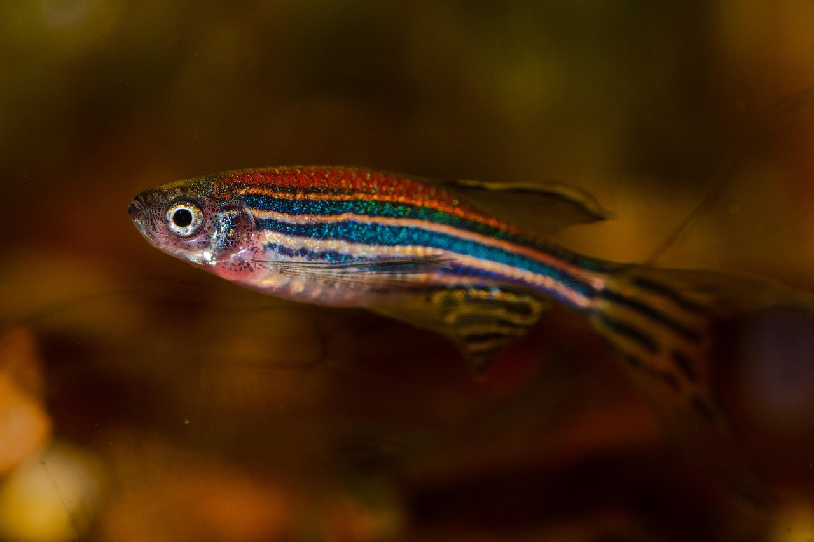
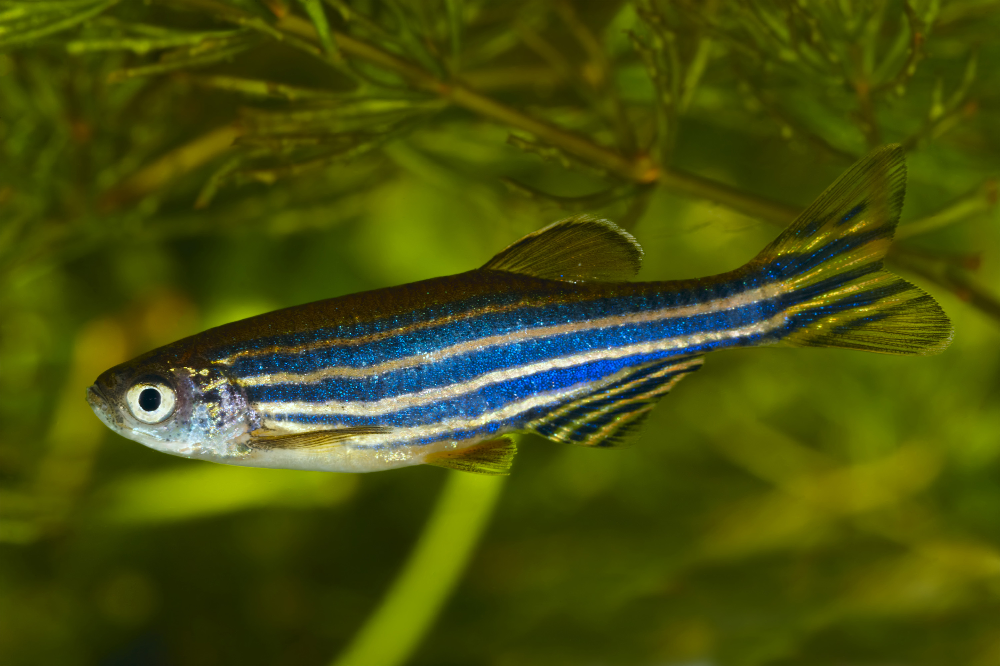

Who is N-ZINC & What We Do
The Nepal Zebrafish in Nature Center (N-ZINC) is an independent scientific research institution established to study native aquatic fauna across Nepal's diverse river systems. By combining field ecology with molecular genetics, N-ZINC advances understanding of local freshwater ecosystems and biodiversity conservation.
N-ZINC acts as a bridge between field sampling in the lowland Terai and modern biological research. Our primary mission centers on studying wild-type Danio rerio to understand ecological adaptation, genetic structure, and environmental health across Himalayan river basins.

Why the Zebrafish?
The zebrafish (Danio rerio) is an ideal vertebrate model to study developmental, physiological, and pathological processes, including infectious diseases. It is genetically close to humans and shares most molecular and cellular pathways with mammals, including immune system components.
Key advantages of the zebrafish model include:
- Live Imaging: Excellent optical clarity during embryonic stages for non-invasive, high-resolution visualization of cellular processes in real time.
- High-Throughput Screening: Highly suitable for large-scale genetic screens, targeted knockdowns, or gene overexpression assays in early developmental stages.
- In Vivo Insights: Offers a unique system to investigate cellular responses within a fully intact vertebrate organ system.
Zebrafish in Nepal's Lowland Ecosystems
Zebrafish (Danio rerio) are native to Nepal’s lowland freshwater systems, especially in the Terai and inner Terai valleys, where they occur in shallow streams, irrigation canals, ponds, and rice-field margins.
While Nepal forms a key region of the species’ natural geographical range, most published scientific literature regarding Nepali populations has focused on wild population genetics, phylogeography, and environmental health rather than captive laboratory breeding within the country.
Documented Nepali sampling localities include:
- Paruwa Sota River (Western Nepal): Utilized as a primary sampling site for wild population-genomics studies.
- Khair Khola (Central Nepal): A key central habitat site monitored for regional genetic variation.
- Bering River (Eastern Nepal): Sampled for detailed mitochondrial and SNP-based population structure analysis.
- Phattepur: Lowland riverine habitat downstream of agricultural zones, noted in historic ecological records.
These habitats are predominantly restricted to low-elevation floodplains, corroborating the ecological classification of Danio rerio as a lowland, slow-flowing freshwater species.

Historical Context & Genetic Distinctiveness
The species was originally described from the lower Ganges basin in northern India, adjacent to Nepal’s eastern Terai boundary. Historical taxonomic surveys in Nepal (e.g., Shrestha, 1978) established the species as part of the country's native freshwater fish fauna.
Over recent decades, genetic sampling of Nepali zebrafish has contributed significantly to wild phylogeography studies, establishing Himalayan river networks as core regions of natural genetic variation.
Genomic investigations highlight several crucial evolutionary features:
- Wild populations across Nepal, India, and Bangladesh segregate into distinct mitochondrial DNA clades and nuclear SNP genetic groups.
- Central Nepali populations exhibit a distinct genetic lineage separate from Eastern and Western river systems.
- Wild Nepali zebrafish display substantially higher genomic diversity compared to highly inbred, standardized laboratory strains, offering a rich resource for evolutionary biology.